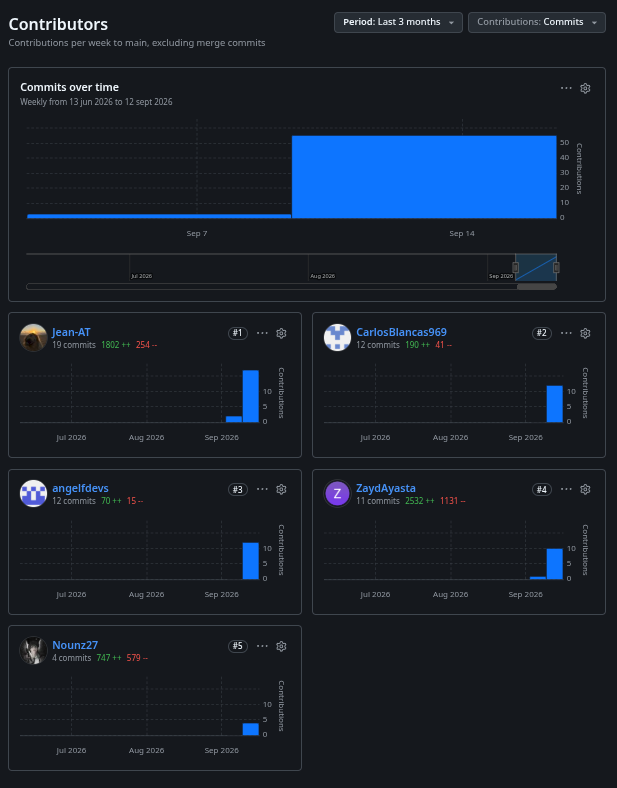

El informe de Service Compliance, desarrollado por el equipo Opervia, se mantiene en el siguiente repositorio de GitHub:
Repositorio:
https://github.com/OperviaStartup/service-compliance-project-report
Durante la elaboración de AV1, el equipo distribuyó el trabajo entre
la definición y revisión del Capítulo I, investigación con usuarios,
Needfinding, Requirements Specification y artefactos de diseño de
software del Capítulo II. Los aportes fueron integrados progresivamente
en el repositorio mediante commits y, en determinados trabajos de
reconstrucción documental, mediante ramas y Pull Requests hacia
main.

Figura 1. Analíticos de contribución del repositorio del Project Report durante AV1.
Al cierre de la elaboración de AV1, el historial del repositorio registra contribuciones de los seis integrantes del equipo.
| Integrante | Usuario de GitHub | Principales aportes en AV1 |
|---|---|---|
| Arias Tasayco, Jean Pool Alexander | Jean-AT |
Capítulo I, revisión e integración del informe, EventStorming y preparación del documento final. |
| Ayasta Martel, Zayd Jaffar | ZaydAyasta |
Requirements Specification, revisión del Capítulo I y Capitulo II, front matter, tabla de contenidos y documentación general del repositorio. |
| Blancas Chávez, Carlos Franco | CarlosBlancas969 |
Strategic-Level Domain-Driven Design y artefactos relacionados del Capítulo II. |
| Flores Eusebio, Angel Thyago | angelfdevs |
Análisis competitivo, entrevistas y actualización de evidencias y contenido del Capítulo II. |
| Montes Maza, Augusto Sebastian | asmmaza |
User Personas, Journey Mapping, Empathy Mapping y otros artefactos de Needfinding. |
| Sánchez Espinoza, Mathias Enrique | Nounz27 |
Diseño y actualización de entrevistas, análisis asociado y recursos del Capítulo II. |
La evidencia mostrada corresponde al historial de commits del repositorio y es consistente con las modificaciones relevantes resumidas en el Registro de Versiones del Informe.